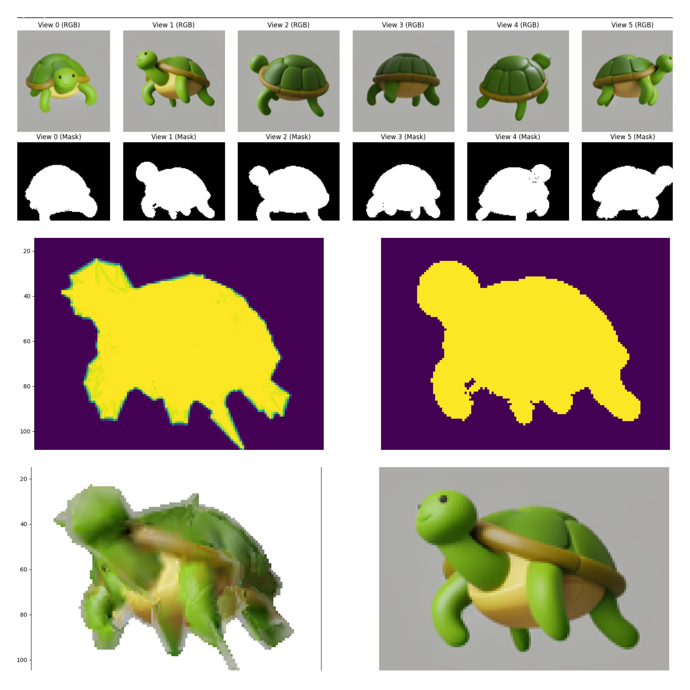
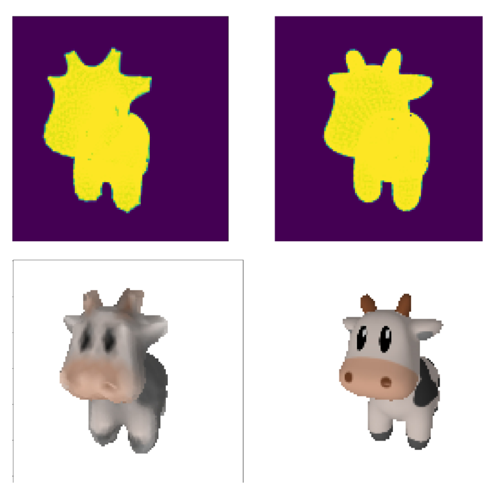
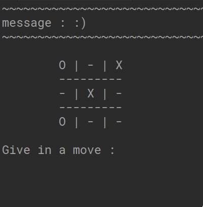
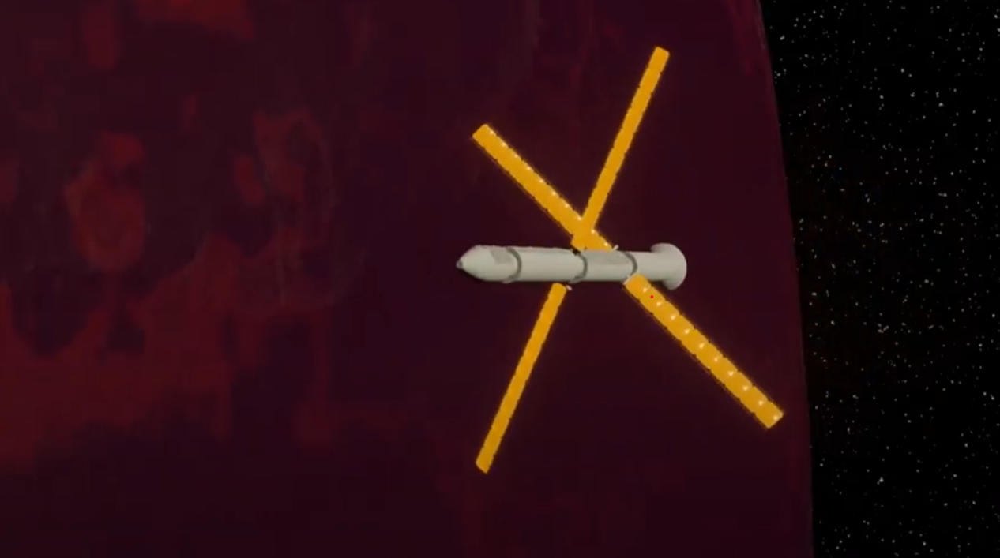
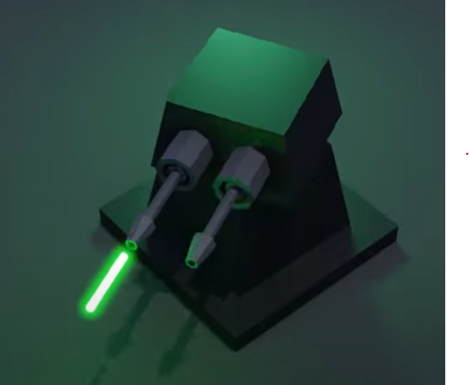

Code Projects
Single image reconstruction
I leveraged the diffusion model Zero123 to effectively generate missing perspectives of an object. The reconstruction process utilized six different perspectives to perform highly accurate differential rendering. A crucial part of the implementation involved a stepwise incremental fitting strategy, where the object's silhouette (mask) was optimized first, which was then followed by the optimization of the object's texture.

Domain: Paper implementation, Computer Vision, Deep Learning, PyTorch.
Code: Link
ViT paper implementation using PyTorch
I implemented the Vision Transformer (ViT) architecture from scratch, visualizing the embedding creation process and training the model on the Food-101 dataset for image classification. To further enhance performance, I incorporated transfer learning by leveraging pretrained weights from PyTorch models, which significantly improved the overall accuracy.

Domain: Paper implementation, Computer Vision, Deep Learning, PyTorch.
Code: Link
Textured differential rendering
This project involved using PyTorch3D to deform an initial spherical source mesh into the shape of a target cow mesh. The mesh fitting was achieved by performing differential rendering across 20 different views. To ensure highly accurate and smooth reconstruction, the optimization incorporated a combined loss function utilizing RGB, silhouette, Laplacian, Edge, and Normal loss components.

Domain: Paper implementation, Computer Vision, Deep Learning, PyTorch.
Code: Link
Transfer learning using PyTorch
I utilized pretrained EfficientNet-B0 weights to classify specific subcategories of the Food-101 dataset, testing the model’s generalization on real-world data beyond the test set. To streamline the workflow, I developed custom wrappers that simplified data preparation, training, evaluation, and visualization, making the experimentation process more efficient and reproducible.

Domain: Transfer learning, Computer Vision, Deep Learning, PyTorch.
Code: Link
Fashion MNIST solution in PyTorch
I worked on predictions using the FashionMNIST dataset, modularizing the code to simplify training and testing across three different models. The implementation was designed to be device-agnostic, ensuring compatibility across CPUs and GPUs, and included detailed time analysis for both training and testing phases.

Domain: Deep Learning, PyTorch.
Code: Link
Tic-Tac-Toe
Adversarial tic-tac-toe implementation using minimax algorithm in C++.

Domain: Artificial intelligence, Algorithm.
Code: Link
Graphics Projects
Interplanetary vehicle 2708
A star wars inspired short film made using Blender. The film showcases a futuristic interplanetary vehicle navigating through space, passing nearby a planet.

Domain: Short Film, 3D graphics, Blender, Animation
Source:: Link
Cannon animation
A small cannon model made using Blender. The model showcases basic use of graph editor to animate the cannon firing.

Domain: 3D graphics, Graph editor, Blender, Animation
Source:: Link